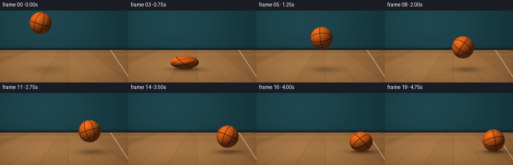
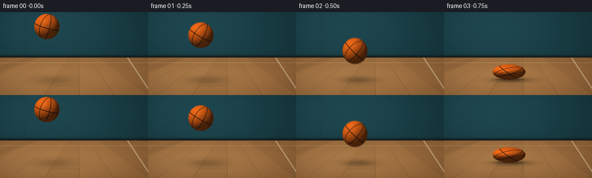

CODING AGENTS AS PIXEL WORLD MODELS
traex/GPT-6.1-Sol · phygen_027
点击播放 · 原生 RGB 像素
逐轮保存的候选
回放视频、检查图与代码变化。
每份候选均可单独播放。实际图片检查记录在下方工具轨迹中。
候选 01播放与检查图
点击播放 · 原生 RGB 像素


展开代码变化
--- 上一保存版本
+++ 本次保存版本
@@ -0,0 +1,238 @@
+"""Render an elastic basketball using only analytic geometry and RGB pixels."""
+from pathlib import Path
+import json
+import math
+
+import numpy as np
+from PIL import Image
+
+from artifact_io import save
+
+
+ROOT = Path(__file__).resolve().parent
+SPEC = json.loads((ROOT / "task_spec.json").read_text())
+W, H = SPEC["width"], SPEC["height"]
+SS = 3
+R = 22.0
+GROUND = 117.0
+GRAVITY = 200.0
+IMPACTS = [(0.75, .60), (2.25, .73), (3.25, .83), (4.00, .90), (4.50, .95)]
+HALF_CONTACT = .07
+Y, X = np.mgrid[0:H * SS, 0:W * SS].astype(np.float32)
+X = (X + .5) / SS
+Y = (Y + .5) / SS
+
+
+def smoothstep(a, b, x):
+ t = np.clip((x-a)/(b-a), 0, 1)
+ return t*t*(3-2*t)
+
+
+def backdrop():
+ """A quiet, softly lit gym wall and a perspective hardwood floor."""
+ walllight = np.exp(-((X-75)/173)**2 - ((Y-18)/98)**2)
+ base = np.stack([18 + 13*walllight, 48 + 24*walllight,
+ 54 + 27*walllight], axis=-1)
+ # Subtle wall panels; avoid noisy background competing with the action.
+ panel = np.exp(-((X-43)/.55)**2) + np.exp(-((X-206)/.55)**2)
+ base -= panel[..., None] * np.array([2, 4, 4])
+ wallgrain = .48*np.sin(X*1.9 + Y*2.5)*np.sin(Y*1.5-X*.7)
+ base += wallgrain[..., None]
+ base *= (1-.14*np.exp(-((Y-76)/3.2)**2))[..., None]
+
+ # Inverse-project planks to a horizontal ground plane.
+ depth = 130 / np.maximum(Y - 52, 1)
+ floor_x = (X-137)*depth/5
+ floor_z = depth*21
+ plank = np.floor(floor_x/17)
+ plank_pos = np.mod(floor_x, 17)
+ seed = np.sin(plank*17.237 + 2.7)*.5 + np.sin(plank*9.134)*.5
+ grain = (np.sin(floor_x*5.4 + .35*np.sin(floor_z*.22))
+ + .35*np.sin(floor_x*15.6 + floor_z*.032)
+ + .3*np.sin(floor_x*34.4 - floor_z*.075))
+ woodshade = 1 + .035*seed + .014*grain
+ joins = np.exp(-(np.minimum(plank_pos, 17-plank_pos)/.15)**2)
+ end_phase = np.mod(floor_z + (plank % 3)*33, 102)
+ ends = np.exp(-(np.minimum(end_phase, 102-end_phase)/.23)**2)
+ woodshade *= 1-.19*joins-.09*ends
+ softlight = np.exp(-((X-100)/170)**2 - ((Y-113)/48)**2)
+ floor = woodshade[..., None] * np.stack([
+ 125+43*softlight, 82+38*softlight, 45+25*softlight], axis=-1)
+ # Broad, subdued light through off-screen windows.
+ windowlight = np.exp(-((X+.90*(Y-90)-67)/45)**8)
+ floor += (windowlight*smoothstep(78, 106, Y)*3.0)[..., None]
+ # Court line projected toward the far end of the room.
+ line_x = 220 + (Y-78)*.66
+ line = (1-smoothstep(.8, 1.7, np.abs(X-line_x))) * .57
+ floor = floor*(1-line[..., None]) + np.array([222, 202, 158])*line[..., None]
+ farline = np.exp(-((Y-88.0)/.40)**2)*.32
+ floor = floor*(1-farline[..., None]) + np.array([223, 204, 168])*farline[..., None]
+ base = np.where((Y >= 79)[..., None], floor, base)
+ trim = ((Y >= 75.7) & (Y < 79))
+ base[trim] = np.array([20, 30, 29]) + (Y[trim]-76)[:, None]*2
+ # Lens-like vignette, kept soft enough to preserve the orange subject.
+ vignette = 1-.12*((X-128)/181)**2-.065*((Y-74)/106)**2
+ return np.clip(base*vignette[..., None], 0, 255)
+
+
+BG = backdrop()
+
+
+def pose(t):
+ # Horizontal speed is successively lost to ground friction.
+ x = 81 + 42*t
+ for impact, _ in IMPACTS:
+ x -= 7.0*max(0, t-impact)
+ q = 1.0
+ first_start = IMPACTS[0][0]-HALF_CONTACT
+ if t < first_start:
+ initial_v = (GROUND-R-25-.5*GRAVITY*first_start**2)/first_start
+ cy = 25 + initial_v*t + .5*GRAVITY*t*t
+ # Modest stretching during the fast downward throw.
+ q = 1.0 + .035*smoothstep(0, first_start, t)
+ return x, cy, R/math.sqrt(q), R*q
+ for i, (impact, compression) in enumerate(IMPACTS):
+ start, end = impact-HALF_CONTACT, impact+HALF_CONTACT
+ if start <= t <= end:
+ phase = (t-start)/(2*HALF_CONTACT)
+ q = 1-(1-compression)*math.sin(math.pi*phase)**2
+ return x, GROUND-R*q, R/math.sqrt(q), R*q
+ if t > end:
+ next_start = (IMPACTS[i+1][0]-HALF_CONTACT
+ if i+1 < len(IMPACTS) else end)
+ if t < next_start:
+ duration = next_start-end
+ dt = t-end
+ height = .5*GRAVITY*dt*(duration-dt)
+ q = 1 + .065*math.exp(-dt/.16)*(1-compression)/.4
+ return x, GROUND-R-height, R/math.sqrt(q), R*q
+ return x, GROUND-R, R, R
+
+
+def rotation(t):
+ # Inverse rotation maps visible points back to the orange leather panels.
+ a = -.24 - .93*min(t, 4.5) - .25*max(0, t-4.5)
+ b = .24 + .12*math.sin(t*.6)
+ c = .14
+ rz = np.array([[math.cos(a), -math.sin(a), 0],
+ [math.sin(a), math.cos(a), 0], [0, 0, 1]])
+ ry = np.array([[math.cos(b), 0, math.sin(b)], [0, 1, 0],
+ [-math.sin(b), 0, math.cos(b)]])
+ rx = np.array([[1, 0, 0], [0, math.cos(c), -math.sin(c)],
+ [0, math.sin(c), math.cos(c)]])
+ return rz @ ry @ rx
+
+
+def ball_layer(t):
+ cx, cy, rx, ry = pose(t)
+ x0 = max(0, int((cx-rx-2)*SS))
+ x1 = min(W*SS, int((cx+rx+2)*SS)+1)
+ y0 = max(0, int((cy-ry-2)*SS))
+ y1 = min(H*SS, int((cy+ry+2)*SS)+1)
+ u = (X[y0:y1, x0:x1]-cx)/rx
+ v = -(Y[y0:y1, x0:x1]-cy)/ry
+ radius2 = u*u+v*v
+ z = np.sqrt(np.maximum(0, 1-radius2))
+ sphere = np.stack([u, v, z], axis=-1)
+ local = sphere @ rotation(t)
+ # Pebbled leather, with staggered rounded bumps on spherical UVs.
+ lon = np.arctan2(local[..., 2], local[..., 0])
+ lat = np.arcsin(np.clip(local[..., 1], -1, 1))
+ vv = (lat+math.pi/2)*35
+ row = np.floor(vv)
+ uu = lon*35*np.maximum(.22, np.cos(lat)) + .5*np.mod(row, 2)
+ cellx = uu-np.floor(uu)-.5
+ celly = vv-row-.5
+ bump = np.exp(-(cellx*cellx+celly*celly)/.115)
+ grain = np.sin(uu*2.31+row*1.79)*np.sin(uu*3.77-row*4.13)
+ pebble = 1 + .062*(bump-.38) + .015*grain
+
+ # Four continuous inset channels give the recognizable basketball layout.
+ xx, yy, zz = local[..., 0], local[..., 1], local[..., 2]
+ seamdist = np.minimum.reduce([np.abs(xx), np.abs(yy),
+ np.abs((xx+zz)/math.sqrt(2)),
+ np.abs((xx-zz)/math.sqrt(2))])
+ groove = 1-smoothstep(.027, .042, seamdist)
+ core = 1-smoothstep(.016, .025, seamdist)
+ leather = np.empty(sphere.shape)
+ leather[...] = [243, 105, 22]
+ # Small panel-to-panel variation, rather than a perfectly synthetic sphere.
+ panels = 1+.014*np.sign(xx)*np.sign(yy) + .008*np.sign(xx+zz)
+ leather *= (pebble*panels)[..., None]
+ leather *= (1-.19*groove)[..., None]
+ leather = leather*(1-core[..., None]) + np.array([36, 25, 17])*core[..., None]
+
+ normal = np.stack([u/rx, v/ry, z/rx], axis=-1)
+ normal /= np.maximum(1e-5, np.linalg.norm(normal, axis=-1))[..., None]
+ light = np.array([-.46, .73, .57])
+ light /= np.linalg.norm(light)
+ lambert = np.maximum(0, normal @ light)
+ # Broad warm key, cool ambient fill, and a very subdued rubber highlight.
+ shading = .28+.72*lambert
+ rgb = leather*shading[..., None]
+ rgb += ((1-lambert)*4)[..., None]*np.array([.35, .62, .80])
+ halfway = light+np.array([0, 0, 1])
+ halfway /= np.linalg.norm(halfway)
+ highlight = np.maximum(0, normal @ halfway)**24
+ rgb += (highlight*(10+8*bump)*(1-.85*core))[..., None]*np.array([1, .83, .60])
+ # Ground-facing reflected light keeps the dark bottom warmly readable.
+ rgb += (np.maximum(0, -v)*5*(1-core))[..., None]*np.array([1, .49, .18])
+ alpha = 1-smoothstep(1-.7/(R*SS), 1+.7/(R*SS), np.sqrt(radius2))
+ return (x0, x1, y0, y1), np.clip(rgb, 0, 255), alpha
+
+
+def render_at(t):
+ frame = BG.copy()
+ cx, cy, rx, ry = pose(t)
+ height = max(0, GROUND-cy-ry)
+ # Soft cast shadow shrinks and darkens continuously as the ball approaches.
+ sx = rx*.92 + height*.12
+ sy = 3.3 + height*.042
+ shadow_x = cx+4+height*.105
+ broad = np.exp(-((X-shadow_x)/(sx*1.30))**2-((Y-GROUND-1)/(sy*1.35))**2)
+ shadow = broad*(.36*math.exp(-height/92))
+ tight = np.exp(-((X-cx)/(rx*.86))**4-((Y-GROUND)/1.55)**2)
+ shadow += tight*.25*math.exp(-height/8)
+ shadow *= smoothstep(79, 82, Y)
+ frame *= (1-np.clip(shadow, 0, .67))[..., None]
+ bounds, ball, alpha = ball_layer(t)
+ x0, x1, y0, y1 = bounds
+
+ # Only a faint reflection on the finished, not mirror-like, maple floor.
+ if height < 9:
+ reflect_y = 2*GROUND-Y[y0:y1, x0:x1]
+ # Reflection is composed by flipping the existing shaded ball patch.
+ reflected = ball[::-1]
+ reflected_alpha = alpha[::-1]
+ dest_y0 = int(round(2*GROUND*SS-y1))
+ dest_y1 = dest_y0+(y1-y0)
+ lo, hi = max(0, dest_y0), min(H*SS, dest_y1)
+ if hi > lo:
+ i0, i1 = lo-dest_y0, hi-dest_y0
+ fade = .085*np.exp(-(Y[lo:hi, x0:x1]-GROUND)/11)
+ fade *= (Y[lo:hi, x0:x1] >= GROUND)
+ a = reflected_alpha[i0:i1]*fade
+ frame[lo:hi, x0:x1] = (frame[lo:hi, x0:x1]*(1-a[..., None])
+ + reflected[i0:i1]*a[..., None])
+ frame[y0:y1, x0:x1] = frame[y0:y1, x0:x1]*(1-alpha[..., None])+ball*alpha[..., None]
+ return frame
+
+
+def main():
+ frames = []
+ for i in range(SPEC["frames"]):
+ t = i/SPEC["fps"]
+ # Brief photographic shutter: movement is readable without ghost trails.
+ if any(abs(t-time) < .025 for time, _ in IMPACTS):
+ image = render_at(t)
+ else:
+ image = sum(render_at(max(0, t+offset)) for offset in [-.007, 0, .007])/3
+ high_res = Image.fromarray(np.clip(image, 0, 255).astype(np.uint8))
+ frames.append(np.asarray(high_res.resize((W, H), Image.Resampling.LANCZOS)))
+ frames = np.stack(frames).astype(np.uint8)
+ save(frames, ROOT)
+ print(f"Saved {frames.shape[0]} RGB frames at {W}x{H}, {SPEC['fps']} fps.")
+
+
+if __name__ == "__main__":
+ main()
可观测工具轨迹
实际执行的命令与返回图片。
命令 1exit 0
/bin/bash -lc "ls -la && cat prompt.txt && printf '\\n---RULES---\\n' && cat GENERATION_RULES.md && printf '\\n---SPEC---\\n' && cat task_spec.json"
命令 2exit 0
/bin/bash -lc "cat artifact_io.py && printf '\\n---\\n' && python - <<'PY'
import numpy,PIL
print('numpy', numpy.__version__, 'PIL',PIL.__version__)
PY"命令 3exit 0
/bin/bash -lc 'command -v ffmpeg || true'
命令 4exit 0
/bin/bash -lc "python generate.py && python - <<'PY'
from pathlib import Path
import numpy as np
from PIL import Image
import generate
p=Path('.')
a=np.load('pixels.npz')['pixels']
print('Saved tensor:',a.shape, a.dtype)
for i in range(20):
f=np.asarray(Image.open(p/'frames'/f'{i:02d}.png'))
assert f.shape==(144,256,3) and f.dtype==np.uint8
x,y,rx,ry=generate.pose(i/4)
print(f'{i:02d}: t={i/4:.2f} x={x:.1f}, y={y:.1f}, radii=({rx:.1f},{ry:.1f}), bottom={y+ry:.1f}')
print('Required artifacts:',*[f'{n} ({(p/n).stat().st_size} bytes)' for n in ['generate.py','pixels.npz','index.html','inspection.png','transition_check.png']],sep='\\n')
PY"保存候选 1 份；完成命令 4 次；可验证图片返回 0 张。原始 API 响应与完整日志保留在本地。